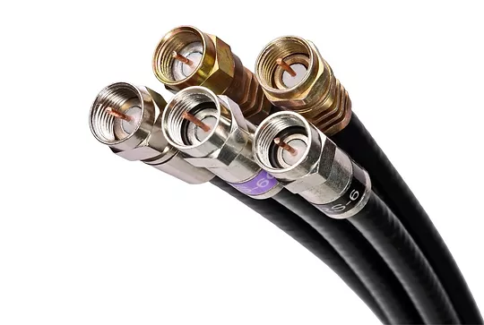

TIPOS DE CABLEADO
CABLE SATA
ATA es una sigla que refiere a Serial Advanced Technology Attachment. Se trata de una interfaz que, en el terreno de la informática, permite transferir información entre la placa base (también llamada placa madre o motherboard) y diversos dispositivos de almacenamiento (como una unidad de disco óptico o una unidad de disco rígido o duro) El cable SATA, por lo tanto, es el elemento que une físicamente la placa base con los dispositivos de almacenamiento. Al abrir el gabinete de muchas computadoras (ordenadores), de este modo, podemos observar cómo el cable SATA vincula al motherboard con el disco duro y la unidad de DVD-ROM, por ejemplo.
CABLE IDE
El cable IDE es un tipo de cable, generalmente gris, que se utiliza para conectar un conector IDE de la placa madre hacia un dispositivo de almacenamiento(especialmente discos duros y unidades de discos ópticos). Generalmente cada cable IDE permite conectar dos dispositivos, el problema es que sólo un dispositivo puede estar transfiriendo información a la vez.
CABLE DE ALIMENTACION DE LA FUENTE DE PODER A LA MAIN BOARD
El cable de poder principal se conecta a la placa madre y es estrecha. Viene en variedades de 20 y 24 pines, dependiendo del factor de potencia para la cual se diseñó la fuente. Las fuentes más viejas son más propensas a tener un conector de 20 pines, mientras que las más nuevas usan sólo conectores de 24 pines. Algunas unidades son capaces de cambiar del formato de 20 pines al de 24..
CABLE USB
Los cables USB (Universal Serial Bus) son el tipo de conexión más habitual para periféricos y accesorios. Los usan memorias USB, discos duros externos, cámaras digitales y un largo etcétera. Muchos accesorios que tradicionalmente usaban otro tipo de conexiones, actualmente ofrecen modelos con conexiones USB como por ejemplo ratones, teclados, micrófonos, impresoras o altavoces. Los cables USB también pueden servir como cargadores de algunos dispositivos (teléfonos móviles) o para transferir datos de un ordenador a otro.
CABLE FIREWIRE IEEE 1349
Conectar cámaras digitales, discos duros externos al ordenador e incluso para transferir información entre ordenadores en red sin router.
CABLE DE PODER
Un cable de poder se refiere al cable que conecta la computadora al sistema eléctrico y que le da el poder(electricidad) a la misma. Es el cable que va desde el enchufe de la corriente (o desde el enchufe del estabilizador de tensión eléctrica) hacia la fuente de poder (o fuente de energía eléctrica) de la computadora, generalmente ubicado en la parte trasera superior del gabinete.
CABLE VGA
Quizás el conector de vídeo de ordenador más clásico: el cable VGA. Un VGA estándar tiene 15 pins y en el otro extremo otro igual para conectar la CPU con el monitor o por ejemplo conectar tu portátil a una pantalla de televisión o a un proyector. Para los monitores más modernos tenemos conversores de VGA a señales HDMI o DVI. Existe una variante del VGA, el Mini-VGA, presente en algunos portátiles pero para la misma también existen adaptadores (Mini-VGA a VGA) por si quieres conectar un monitor a tu portátil.
CABLE HDMI
HDMI responde a las siglas High Definition Multimedia Interface (interfaz multimedia de alta definición) y hace referencia a la norma de conexión que permite transmitir audio y vídeo sin comprimir desde un equipo a otro y con un único cable, incluido el contenido en alta definición. Por tanto, esta tecnología se emplea para vincular, por ejemplo, tu ordenador con el televisor y así poder disfrutar de los contenidos del primero en la gran pantalla del segundo.
CABLE PS/2 Y CABLE MINI DIN
El puerto PS/2 se utilizaba en las computadoras antiguas para conectar dispositivos de entrada como teclado y ratón. PS/2 fue introducido por IBM en 1987 como Personal System 2 o sistema personal 2, cuya abreviación es “PS/2”. Un conector PS/2 es un conector redondo con seis pines.
CABLE PAR TRENZADO SIN APANTALLAR
Este tipo de cable es el más utilizado. Tiene una variante con apantallamiento pero la variante sin apantallamiento suele ser la mejor opción para una PYM La calidad del cable y consecuentemente la cantidad de datos que es capaz de transmitir varían en función de la categoría del cable. Las gradaciones van desde el cable de teléfono, que solo transmite la voz humana a el cable de categoría 5 capaz de transferir 100 Megabits por segundo.
CABLE DE PAR TRENZADO PANTALLADO/SHIELDED TWISTED PAIR (STP) CABLE
Una de las desventajas del cable UTP es que es susceptible a las interferencias eléctricas. Para entornos con este problema existe un tipo de cable UTP que lleva apantallamiento, esto es, protección contra interferencias eléctricas. Este tipo de cable se utiliza con frecuencia en redes con topología Token Ring. Cable Coaxial
CABLE COAXIAL
El cable coaxial contiene un conductor de cobre en su interior. Este va envuelto en un aislante para separarlo de un apantallado metálico con forma de rejilla que aisla el cable de posibles interferencias externas. Aunque la instalación del cable coaxial es más complicada que la del UTP, este tiene un alto grado de resistencia a las interferencias. Por otra parte también es posible conectar distancias mayores que con los cables de par trenzado. Existen dos tipos de cable coaxial, el fino y el grueso conocidos como thin coaxial y thick coaxial.
CABLE DE FIBRA ÓPTICA
El cable de fibra óptica consiste en un centro de cristal rodeado de varias capas de material protector. Lo que se transmite no son señales eléctricas sino luz con lo que se elimina la problemática de las interferencias. Esto lo hace ideal para entornos en los que haya gran cantidad de interferencias eléctricas. También se utiliza mucho en la conexión de redes entre edificios debido a su inmunidad a la humedad y a la exposición solar.
REDES LAN SIN CABLEADO
No todas las redes se implementan sobre un cableado. Existen redes que utilizan señales de radio de alta frecuencia o haces infrarrojos para comunicarse. Cada punto de la red tiene una antena desde la que emite y recibe. Para largas distancias se pueden utilizar teléfonos móviles o satélites. Este tipo de conexión está especialmente indicada para su uso con portátiles o para edificios viejos en los que es imposible instalar un cableado. Las desventajas de este tipo de redes es sus altos costes, su susceptibilidad a las interferencias electromagnéticas y la baja seguridad que ofrecen. Además son más lentas que las redes que utilizan cableado.